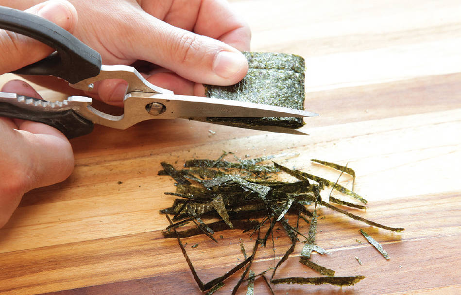

TAMAGO-KAKE GOHAN
|
Yield Serves 1 |
Active Time 2 minutes Total Time 2 minutes |
Hondashi is powdered dashi that can be found at any Japanese market and most well-stocked supermarkets. Furikake is a seasoning mixture typically made with seaweed, dried sweetened bonito, and sesame seeds, among other ingredients. It can be found at any Japanese market.
INGREDIENTS
1 to 1½ cups hot cooked white rice
1 large egg, plus 1 large egg yolk (optional)
Light soy sauce, preferably Japanese usukuchi shoyu
Kosher salt
MSG powder, such as Aji-No-Moto or Ac’cent (optional)
Mirin (optional)
Hondashi (optional; see Notes)
Furikake (optional; see Notes)
Thinly sliced or torn nori (optional)
DIRECTIONS
Place the rice in a bowl and make a shallow indentation in the center. Break the whole egg into the center. Season with ½ teaspoon soy sauce, a pinch of salt, a pinch of MSG (if using), ½ teaspoon mirin (if using), and a pinch of Hondashi (if using). Stir vigorously with chopsticks to incorporate the egg; it should become pale yellow, frothy, and fluffy in texture. Taste and adjust the seasonings as desired. Sprinkle with furikake and nori (if using), make a small indentation in the top, and add the extra egg yolk (if using). Serve immediately.
Soy Sauce, Dashi, and Mirin: The Heart of Japanese Cooking
The combination of savory soy sauce, smoky dashi stock, and sweet mirin is the heart of Japanese cooking. Where France has its chicken stock and butter and Mexico has its dried chiles, Japan has soy-dashi-mirin. It’s used in countless savory dishes. It’s what you dip cold soba or somen noodles into. It’s the basic broth for a bowl of udon. Thinly sliced beef is simmered in it to make sukiyaki. It’s what you dip your tempura into. It’s everywhere.
In Japanese supermarkets you’re likely to see bottles of concentrated soy-dashi-mirin labeled mentsuyu (noodle dipping sauce), or simply tsuyu, with dilution levels listed for various dishes. You can buy that stuff—most brands are good to great—or you can easily make it yourself at home. It takes about 10 minutes to make, and once finished, it will last indefinitely in the fridge, ready to dispense at a moment’s notice without the need to pull out each of the individual ingredients every time.
How to Shred Nori for Rice Bowls
Nori is thinly pressed sheets of dried laver, a type of seaweed. At a Japanese supermarket you’re likely to find it in a few different forms: large sheets intended to be used to wrap sushi, seasoned bite-sized snack strips, and finely shredded as a topping for rice bowls. Don’t bother buying the preshredded stuff—the full sheets are typically cheaper, and it’s simple to shred nori at home.
You can use a knife, but I find that the most effective method is to fold the nori over onto itself a few times into a tight bundle, then snip it into fine shreds with a pair of sharp kitchen shears. Nori should be stored as whole sheets in an airtight pouch (usually it’s sold in resealable packaging).
